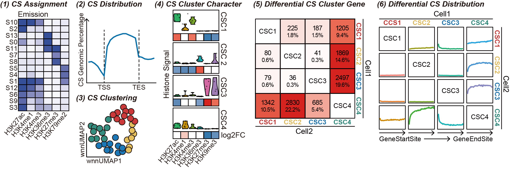

chromIDEAS: Chromatin Informative Dynamic Epigenomic Annotation Suite¶
Chromatin Informative Dynamic Epigenomic Annotation Suite (chromIDEAS) is a versatile software package for chromatin state analysis, supporting:
✅ (1) Chromatin State Segmentation: Integrates quantitative epigenetic signals across multiple cell types to define consensus chromatin states.
✅ (2) Chromatin State Distribution Visualization: Visualizes chromatin state patterns across specified genomic regions or predefined gene sets.
✅ (3) Chromatin State Functional Clustering: Applies Weighted Nearest Neighbor (WNN) algorithm to cluster chromatin states based on both genomic distribution patterns and epigenetic signal composition.
✅ (4) Chromatin State Cluster Annotation: Identifies distinctive epigenetic signatures for each chromatin state cluster.
✅ (5) Differential Chromatin State Cluster Gene Analysis: Performs differential analysis between cell types using chromatin state clusters as functional units, identifying genes associated with divergent state regions.
✅ (6) Differential Region Mapping: Maps genomic locations of differentially regulated genes and quantifies the probability distribution of differential regions.
✅ (7) Chromatin State Similarity Assessment: Evaluate the similarity of chromatin status among different cells across genome.
The flow chart below depicts the different tool modules that are currently available.
Contents:¶
The features of chromIDEAS include:
✅ Multi-threading Support: Enables parallel computing to significantly accelerate chromatin state calculations. Delivers over 5x speed improvement compared to the original S3V2 software package.
✅ Species-Agnostic: Supports chromatin state analysis for any species without restrictions.
✅ Tool Compatibility: Compatible with all major chromatin state annotation tools, including but not limited to chromHMM, Segway, and Spectacle. Allows functional clustering and chromatin state distribution visualization based on existing analysis results.
✅ Checkpoint Restart: Features an optimized execution framework built upon S3V2 and IDEAS, supporting resumable computations from checkpoints to improve efficiency.
✅ One-Click Installation: Available through the conda platform for seamless deployment with a single command.
Tip
For bug reports and feature requests please open an issue on github.
The implementation of chromIDEAS relies on the following tools:
IDEAS (DOI: 10.1093/nar/gkw278): Joint chromatin state segmentation across cell types using epigenetic signals instead of binary data (https://github.com/yuzhang123/IDEAS).
S3V2 (DOI: 10.1093/bioinformatics/btab148): Normalization accounting for background and peak signal distributions (https://github.com/guanjue/S3V2_IDEAS_ESMP).
Seurat (DOI: 10.1016/j.cell.2021.04.048): Weighted Nearest Neighbor (WNN) algorithm to integrate multi-modal data (the genomic spatial distribution of chromatin states and their epigenetic signal compositions) (https://github.com/satijalab/seurat).
Please cite chromIDEAS2 as follows:
Liu Yang, Shan Liu, Ting Lu, Shaokang Mo, Bin Qi and Kuangyu Yen. “chromIDEAS Reveals Epigenetic Dynamics via Multi-Dimensional Clustering of Chromatin States” Nucleic Acids Research (2025): under review.